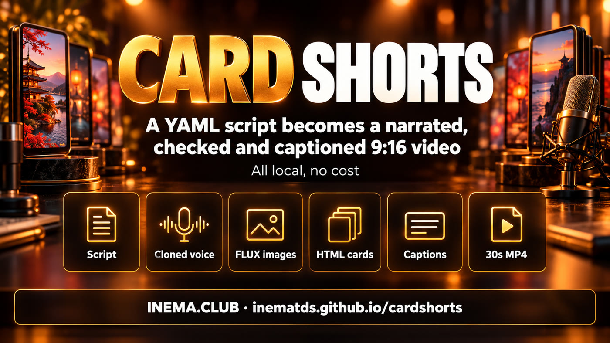

cardshorts is a command-line tool that creates short vertical videos (Reels, Shorts, TikTok) from a text file. Each scene has a spoken line and a ready-made screen (a "card"). The tool records the narration with a cloned voice, checks that the voice said it right, generates the images and delivers the MP4 with word-by-word captions, fitting in 30 seconds. It is for people who want to publish provocative videos often without editing by hand. It runs on your computer, with a graphics card and the INEMA voice and image projects installed.
What it is
A ready-made format, you just write
It was born from a series of shorts about AI in Brazil. What worked became a template: five screen styles, voice and content rules, and one command that does the rest.

🎬 One file, one video
The roteiro.yaml lists the scenes: line + card template + texts. One command delivers the 1080×1920 MP4.
🎙️ Checked voice
Each line is transcribed after it is recorded. If the voice got a word wrong, it records again (up to 3 times) and trims the mumbling at the end.
⏱️ Fits in 30 s
Speeds the speech up to 1.2× to fit the maximum length. If it still does not fit, it stops and tells you how much to cut.
How it works
From script to MP4
Each stage uses a local tool. Voice and images are cached: change one text and only that line is recorded again.
Start with the preview, which is fast. Only record the voice once the cards look good.
1
Download and look at the styles
Lists the 5 styles, the templates in each one and the fields each template needs.
git clonehttps://github.com/inematds/cardshorts && cd cardshorts
./cardshorts.py estilos
2
Create the video folder
Copies the sample script of the chosen style.
./cardshorts.py novo meus/ia-trabalho --estilo versus
3
Write the script
One line per scene, written the way it is spoken: numbers spelled out, "inema ponto club". About 70 words fit in 30 seconds. (The narration is in Portuguese, so the sample lines stay in Portuguese.)
estilo: versus
max_seg: 30
musica: true
voz: {ref: nei}
imagens:
dupla: {prompt: "two modern faceless humanoid robots...", w: 1088, h: 640}
cenas:
- fala: "De um lado, quem trabalha. Do outro, os humanoides."
molde: capa-dupla
campos: {foto_cima: "img:equipe", foto_baixo: "img:dupla", faixa: "VOCÊ × ELES", ...}
4
Check the preview
Generates the images and the cards and puts them all together in previa.png. Make sure no text spills out of a card and that the caption band (bottom part) does not cover the title.
Records the voice (about 2 minutes per line the first time), checks each line, adjusts the speed and assembles. The log shows the final captions for review.
Changed a line? Only that one is recorded again. Wrong word in the captions? Fix it in the script, without re-recording.
correcoes: {garanda: garanta}
./cardshorts.py musica musicas/calma.mp3 "calm lofi piano, instrumental"# another soundtrack
7
Use it with the agent
The skill/ folder is a skill for Claude Code and Codex: it picks different styles for each version and follows the content rules.
ln -s $PWD/skill ~/.claude/skills/cardshorts
# in Claude Code: "/cardshorts make 3 different versions about ..."
Styles
Five looks for the same idea
To make three versions of a topic, use three styles. The same template with different text comes out too similar.
versusBlack-and-white editorial with red, X × Y, split screencrachaTarget, stamped ID badges, blank ballotdocumentoBlank form, notice, certificateextratoReceipt with total, pending items and pollcelularNotification, search, queue and YES/NO
Ready-made example: exemplos/versus
Four scenes, cloned voice, a tense soundtrack generated locally and word-by-word captions. It came out of this command, with no manual editing: